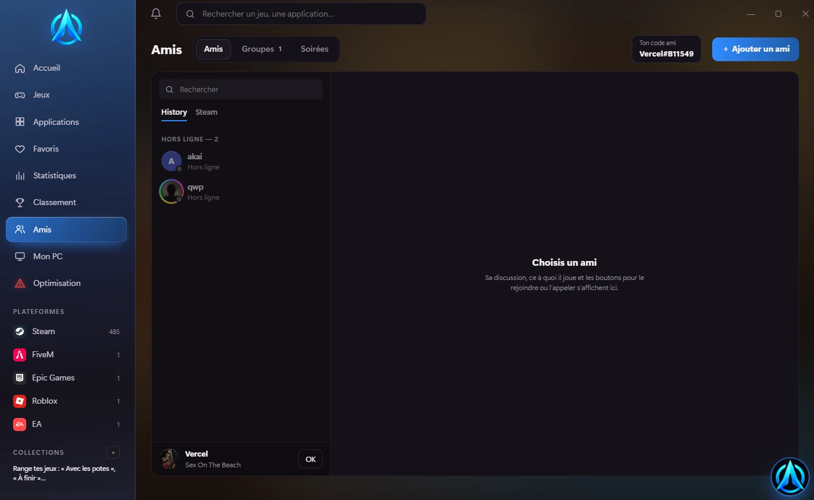
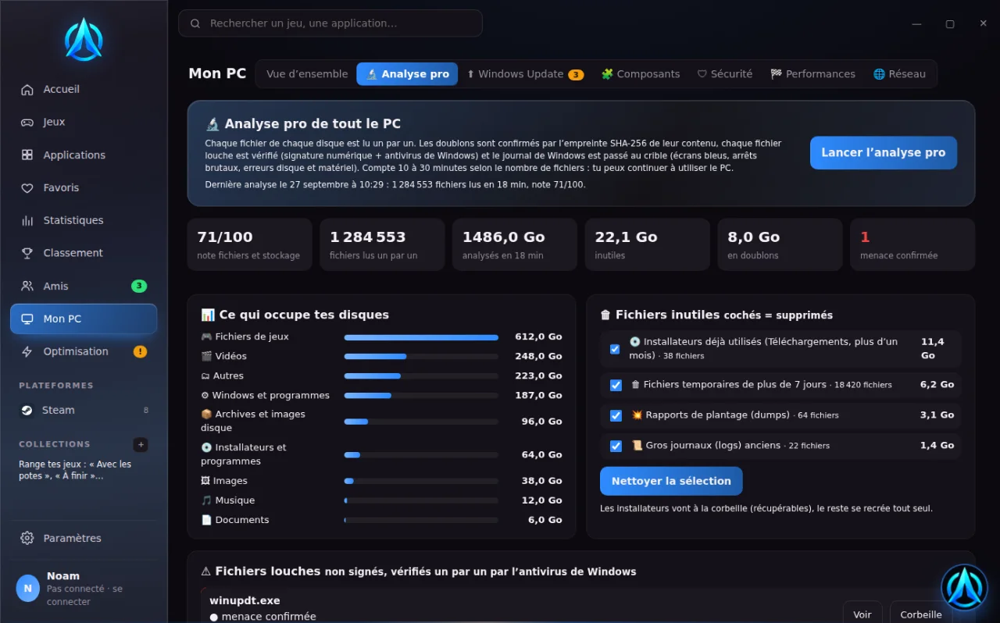
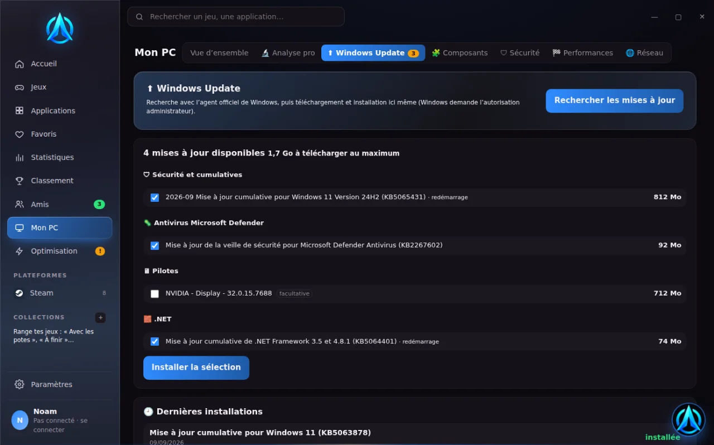
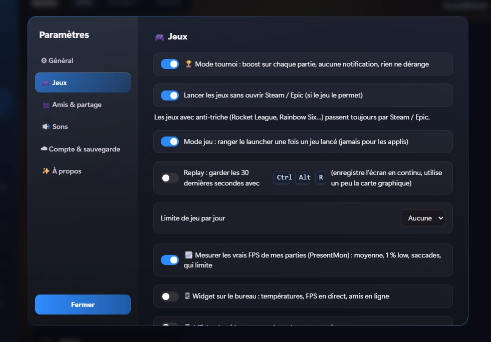
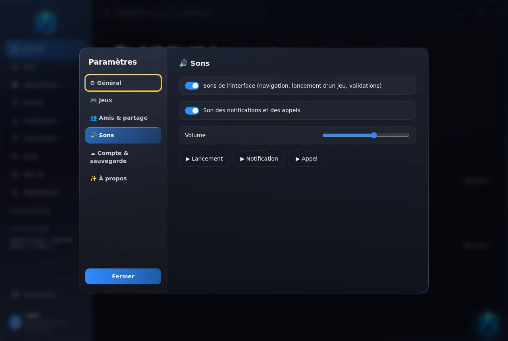

Tous tes jeux. Ton PC au top.
Steam, Epic, Xbox, FiveM, Roblox et tes applis réunis dans un launcher en verre liquide, qui analyse ton PC pour de vrai, mesure ses performances et te connecte à tes amis en direct.
Découvre le launcher
Clique sur une partie pour la voir en vrai. Chaque fonction existe dans l’application : rien n’est promis sans être construit.




Ton PC analysé pour de vrai
Le launcher lit directement Windows : pas d’estimation au hasard. Quand une donnée n’est pas disponible, il le dit.
- Un seul score de santé, détaillé : matériel et sécurité, entretien, fichiers, stabilité de Windows
- Durée de vie réelle des SSD (usure mesurée), heures des disques durs, santé de la batterie
- Points faibles détectés : une seule barrette, XMP désactivé, Windows sur disque dur, pilote ancien…
- Chaque conseil avec le gain attendu, classé du plus urgent au moins urgent
- Antivirus de Windows : analyse rapide ou complète et suppression des menaces
- Programmes qui consomment, signature numérique, fichiers louches repérés
- Rapport détaillé rédigé par l’IA à partir des seules mesures
Chaque fichier, un par un
Pas une analyse de 30 secondes : le launcher lit réellement tout ce qu’il y a sur tes disques. Selon le nombre de fichiers, compte 10 à 30 minutes.
- Lecture de chaque fichier de chaque disque : taille, date, type, avec l’avancement en direct
- Doublons confirmés par l’empreinte SHA-256 du contenu entier, jamais sur le simple nom
- Fichiers louches (double extension, programmes cachés dans AppData ou Temp) : signature numérique puis antivirus de Windows, un par un
- Journal de Windows : écrans bleus, arrêts brutaux, erreurs disque et matérielles, applis qui plantent
- Nettoyage sûr : les fichiers perso vont à la corbeille, il reste toujours une copie de chaque doublon
Tes mises à jour, ici
Le launcher interroge l’agent officiel Windows Update, range les mises à jour (sécurité, Defender, pilotes, .NET) et les installe avec l’avancement en direct. Il te prévient quand un redémarrage est nécessaire.
Des mesures, pas des promesses
Le benchmark est fait par le launcher lui-même, sans outil externe. Voici exactement ce qu’il mesure.
Comment c’est mesuré
À quoi ressemble un résultat
Exemple de lecture des scores ; le trait blanc marque le PC de référence (1000).
Les tiens s’affichent dans Mon PC › Benchmark, avec l’historique pour voir l’effet d’une amélioration.
Tes potes, en direct
Quand un ami lance un jeu, tu le sais tout de suite. Les messages, invitations et « On joue ? » arrivent en bas à gauche de l’écran, même pendant une partie.
- Rejoindre en un clic : jeu Steam ou serveur FiveM
- Messages entre amis et invitations
- Soirées jeu organisées avec rappel
Propre, rangé, à ton goût
Paramètres classés par catégories, sons réglables, thème, compte et sauvegarde en ligne pour tout retrouver sur un autre PC.

Ce que les autres ne font pas
Comparaison avec ce que proposent de base les launchers de jeux habituels (sans extension).
| Fonction | History | Launchers de jeux classiques |
|---|---|---|
| Jeux de plusieurs plateformes réunis | ✓ | partiel |
| Analyse de santé et durée de vie du PC | ✓ | — |
| Benchmark intégré | ✓ | — |
| Nettoyage et optimisation de Windows | ✓ | — |
| Heures FiveM réelles et serveurs | ✓ | — |
| Amis, messages, rejoindre | ✓ | partiel |
| Assistant IA et commandes vocales | ✓ | — |
| Captures et replay | ✓ | partiel |
Consommation mémoire et processeur
Mesurée sur le même PC Windows, launcher au repos après 5 minutes (Gestionnaire des tâches, tous les processus de l’application additionnés).
Les dernières nouveautés
Chargement des versions…
Prêt à essayer ?
Gratuit, sans publicité. L’installation prend moins d’une minute.
⬇ Télécharger History LauncherQuestions fréquentes
C’est gratuit ?
Oui. L’analyse complète du PC sera une option Premium ; tout le reste est gratuit.
Mes jeux restent sur Steam et Epic ?
Oui : History les trouve là où ils sont installés et les lance. Les jeux avec anti-triche passent toujours par leur plateforme.
Le benchmark est-il fiable ?
Ce sont de vraies mesures faites sur ton PC. Ferme tes jeux avant de le lancer, et compare surtout tes propres résultats dans le temps.
Pourquoi la température du processeur n’apparaît pas toujours ?
Windows ne la donne qu’aux applications lancées en administrateur, et pas sur tous les PC. Le launcher l’indique quand c’est le cas.
Comment se font les mises à jour ?
Le launcher te demande « Mettre à jour maintenant ? », télécharge la nouvelle version et redémarre tout seul. Les nouveautés sont aussi annoncées sur notre Discord.